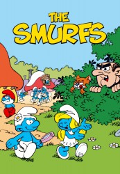

")
Alternativ: The Smurfs (Englischer Titel)
 
 IMDB-Wertung: 7.3 / 10
IMDB-Wertung: 7.3 / 10  Metascore:
Metascore: 
Der böse (Möchtegern-)Zauberer Gargamel und seine gefräßige Katze Asrael versuchen jeden Tag aufs Neue, das Schlumpfendorf und die kleinen Schlümpfe zu fangen. Doch den kleinen Freunden gelingt es immer wieder, auch mit der Hilfe von Papa Schlumpf, die Bösewichte auszutricksen.
Jahr: 1981
Dauer: 22 Minuten
FSK:
Land: USA Studio: NBCTonspuren:
Untertitel:
Auflösung: SD (640x480) Größe: 299 MB
Genre: Komödie, Fantasy, Animation/Trick, Familie, TV-Serie
Regisseur: Ray Patterson, Carl Urbano, Rudy Zamora, Don Lusk, George Gordon, Jay Sarbry, Bob Hathcock, Oscar Dufau, Paul Sommer, John Walker, Bob Goe, Alan Zaslove, John Kimball
Drehbuch: Melisa Wallack
Soundtrack:
Darsteller:
 Lucille Bliss als Smurfette
Lucille Bliss als Smurfette Frank Welker als Hefty Smurf
Frank Welker als Hefty Smurf Michael Bell als Handy Smurf
Michael Bell als Handy Smurf June Foray als Jokey Smurf
June Foray als Jokey Smurf Paul Winchell als Gargamel
Paul Winchell als Gargamel Alan Oppenheimer als Vanity Smurf
Alan Oppenheimer als Vanity Smurf Alan Young als Farmer Smurf
Alan Young als Farmer Smurf Charlie Adler als Natural 'Nat' Smurfling
Charlie Adler als Natural 'Nat' Smurfling Brenda Vaccaro als Scruple
Brenda Vaccaro als Scruple Jonathan Winters als Grandpa Smurf
Jonathan Winters als Grandpa Smurf Marshall Efron als Sloppy Smurf
Marshall Efron als Sloppy Smurf Phil Proctor als King Gerard
Phil Proctor als King Gerard Jack Angel als Additional Voices
Jack Angel als Additional Voices Kenneth Mars als Additional Voices
Kenneth Mars als Additional Voices Pat Fraley als Tuffy Smurf
Pat Fraley als Tuffy Smurf Russi Taylor als Additional Voices
Russi Taylor als Additional Voices Hal Smith als Additional Voices
Hal Smith als Additional Voices Peter Cullen als Additional Voices
Peter Cullen als Additional Voices Phil Hartman als Additional Voices
Phil Hartman als Additional Voices Tress MacNeille als Additional Voices
Tress MacNeille als Additional Voices Rob Paulsen als Additional Voices
Rob Paulsen als Additional Voices Gregg Berger als Additional Voices
Gregg Berger als Additional Voices Barry Dennen als Additional Voices
Barry Dennen als Additional Voices Rene Auberjonois als Additional Voices
Rene Auberjonois als Additional Voices Kath Soucie als Additional Voices
Kath Soucie als Additional Voices B.J. Ward als Additional Voices
B.J. Ward als Additional Voices Joey Camen als Additional Voices
Joey Camen als Additional Voices Paul Eiding als Additional Voices
Paul Eiding als Additional Voices Joseph Ruskin als Additional Voices
Joseph Ruskin als Additional Voices Ray Walston als Additional Voices
Ray Walston als Additional VoicesDatei: X:\Kinder Serien\Schlümpfe\S01\Die Schlümpfe S01E01 Die Schlumpfine.avi seit 30.03.2017
Festplatte: Kinder-Filme+Trick
 Es gibt insgesamt 56 Filme in der Gruppe 'Kinder Serien'
Es gibt insgesamt 56 Filme in der Gruppe 'Kinder Serien'